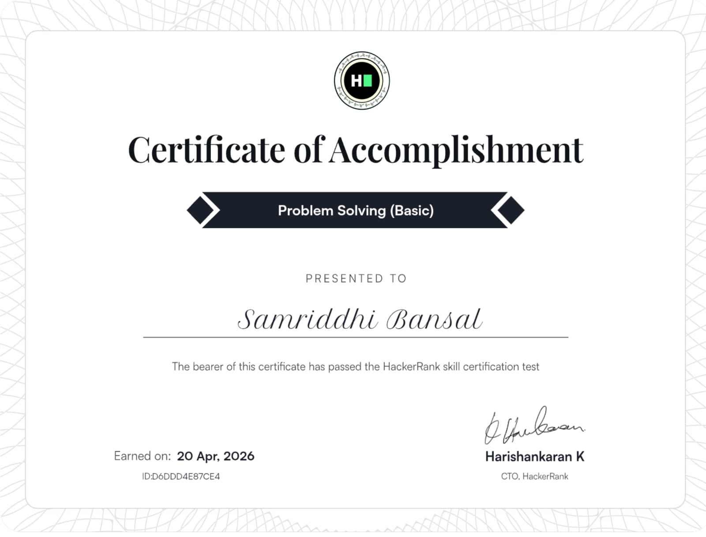
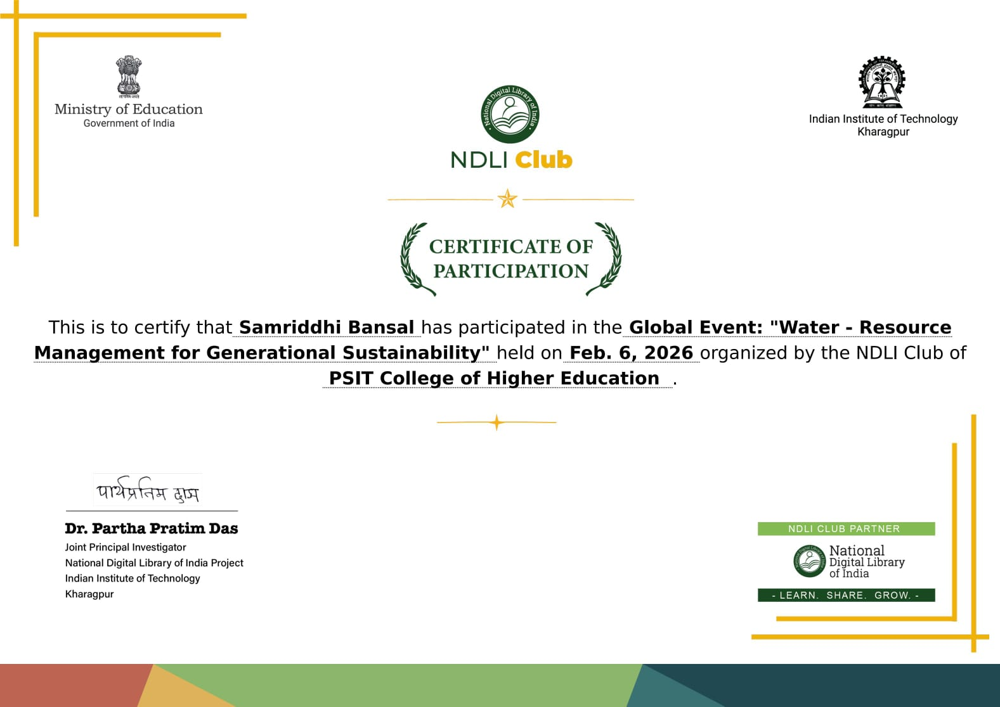
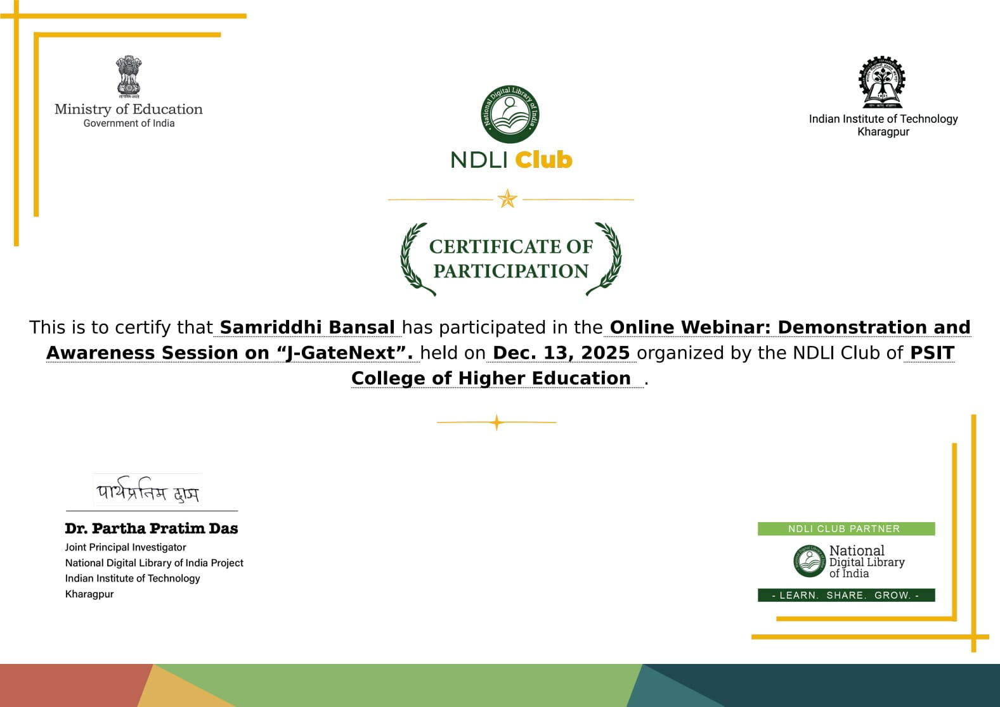
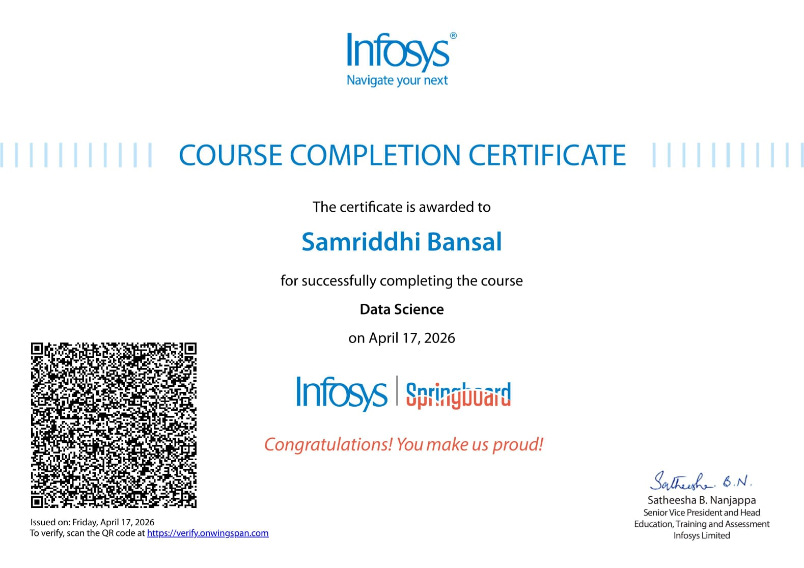
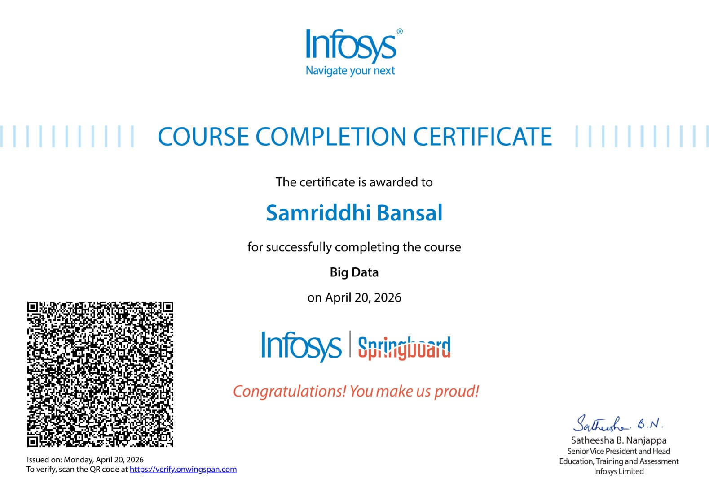

Education
PSIT College of Higher Education
Aug 2025 – Jul 2028Bachelor of Computer Applications (BCA)
- Current CGPA: 9.18
- Semester 2 SGPA: 10.0
- Strong focus on Data Analytics, Business Intelligence and Software Development.
- Active participant in technical communities and student initiatives.
- Working on projects related to Data Analytics, Web Development and Problem Solving.
Methodist High School
2021 – 2025CISCE Board
- ICSE (Class X) – 91.8% | Completed in 2023
- ISC (Class XII) – 80% | Completed in 2025
- Secretary – United Students Organisation
- Service Squad Captain (Girls)
- Active participant in leadership and extracurricular activities
Skills
Projects
IPL Data Analytics Dashboard May 2026 – Jun 2026
Overview
A comprehensive data analytics project based on IPL datasets, focused on uncovering player performance, team trends, match-winning factors and season-wise insights.
Tools Used
- Python
- Pandas
- NumPy
- Matplotlib
- Google Colab
Key Analysis Performed
- Toss impact on match outcomes.
- Powerplay, Middle Overs and Death Overs analysis.
- Top run scorers and wicket takers.
- Team performance comparison.
- Season-wise IPL trends.
- Player vs Player performance insights.
Skills Gained
- Data Cleaning
- Exploratory Data Analysis
- Visualization
- Storytelling with Data
Password Strength Checker Apr 2026 – Present
Overview
A cybersecurity-focused web application that evaluates password strength and provides recommendations for creating secure passwords.
Tools Used
- HTML
- CSS
- JavaScript
Features
- Real-time password analysis.
- Strength indicator.
- Weak password detection.
- Security recommendations.
- Responsive design.
Skills Gained
- Frontend Development
- JavaScript Logic Building
- Cybersecurity Awareness
Personal Portfolio Website Jun 2026
Overview
A modern portfolio website showcasing education, achievements, projects, certifications and professional journey.
Tools Used
- HTML
- CSS
- JavaScript
Features
- Dark Mode & Light Mode.
- Certificate Gallery.
- Responsive Design.
- Expandable Projects Section.
- Professional Timeline Layout.
Skills Gained
- UI/UX Design
- Responsive Web Design
- Frontend Development
Scientific Calculator Jun 2026
Overview
A fully responsive calculator capable of performing arithmetic operations with an intuitive interface.
Tools Used
- HTML
- CSS
- JavaScript
Features
- Addition, Subtraction, Multiplication and Division.
- Clear and Delete Functions.
- Responsive UI.
- Keyboard Support.
Skills Gained
- DOM Manipulation
- JavaScript Events
- Problem Solving
Licenses & Certifications
Problem Solving (Basic) – HackerRank

Skills Learned
- Problem Solving
- Algorithms
- Logical Thinking
- Programming Fundamentals
Water Resource Management for Generational Sustainability

Skills Learned
- Sustainability Concepts
- Water Resource Awareness
- Environmental Responsibility
- Research Exposure
Transforming the Future of Research with IEEE
Skills Learned
- Research Methodology
- Academic Publishing
- Technology Trends
- Innovation Awareness
J-GateNext Awareness Session

Skills Learned
- Research Databases
- Academic Search Techniques
- Research Resources
- Information Discovery
Data Science – Infosys Springboard

Skills Learned
- Data Analysis
- Statistics Basics
- Data Science Workflow
- Data-driven Decision Making
Big Data – Infosys Springboard

Skills Learned
- Big Data Concepts
- Large Scale Processing
- Data Storage
- Analytics Fundamentals
Introduction to Business Intelligence
Skills Learned
- Business Intelligence
- Reporting
- Dashboards
- Data Interpretation
Learning Microsoft Power BI
Skills Learned
- Power BI Dashboards
- Data Visualization
- Interactive Reports
- Business Analytics
Power BI Training
Skills Learned
- Dashboard Building
- Data Modelling
- Visual Analytics
- Reporting Techniques
C++ Programming

Skills Learned
- Object Oriented Programming
- Functions and Arrays
- Problem Solving
- Programming Logic
Contact Me
Let's Connect 🚀
I'm always open to discussing Data Analytics, Business Intelligence, Web Development, internships and exciting opportunities.